Bumper Shell, Rear, 4D
Bumper Shell, Rear, 4D
To remove
1. Raise the car.
2. Remove the centre nuts of the spoiler.
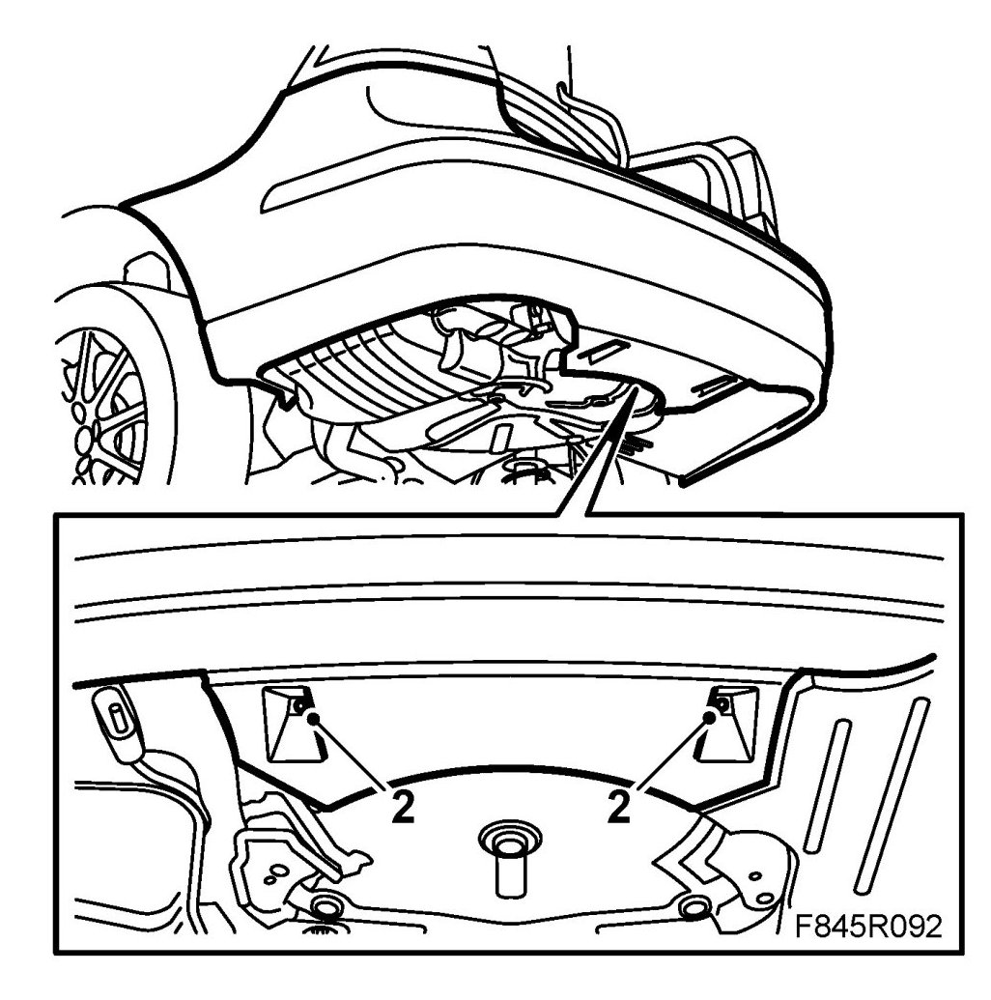
3. Remove the bolts at the wheel housing.
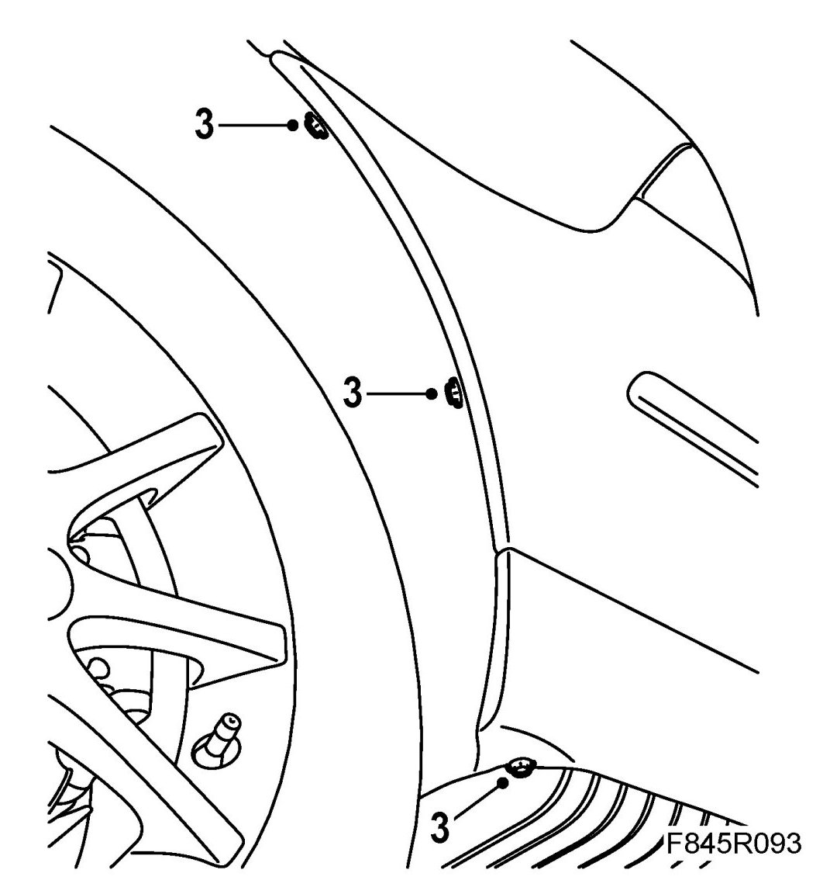
4. Lower the car and open the boot lid.
5. Open the side hatches.
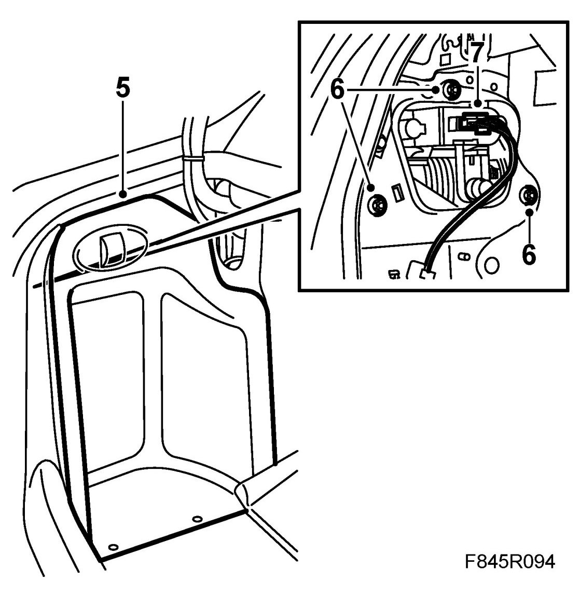
6. Remove the tail lamp nuts.
7. Unplug the connector and remove the tail lamp.
8. Certain cars: Remove bolts on bumper shell that are located under the tail light.
Cars with SPA: Unplug the connector to the rear bumper shell. Loosen the rubber grommet and pull out the cable.
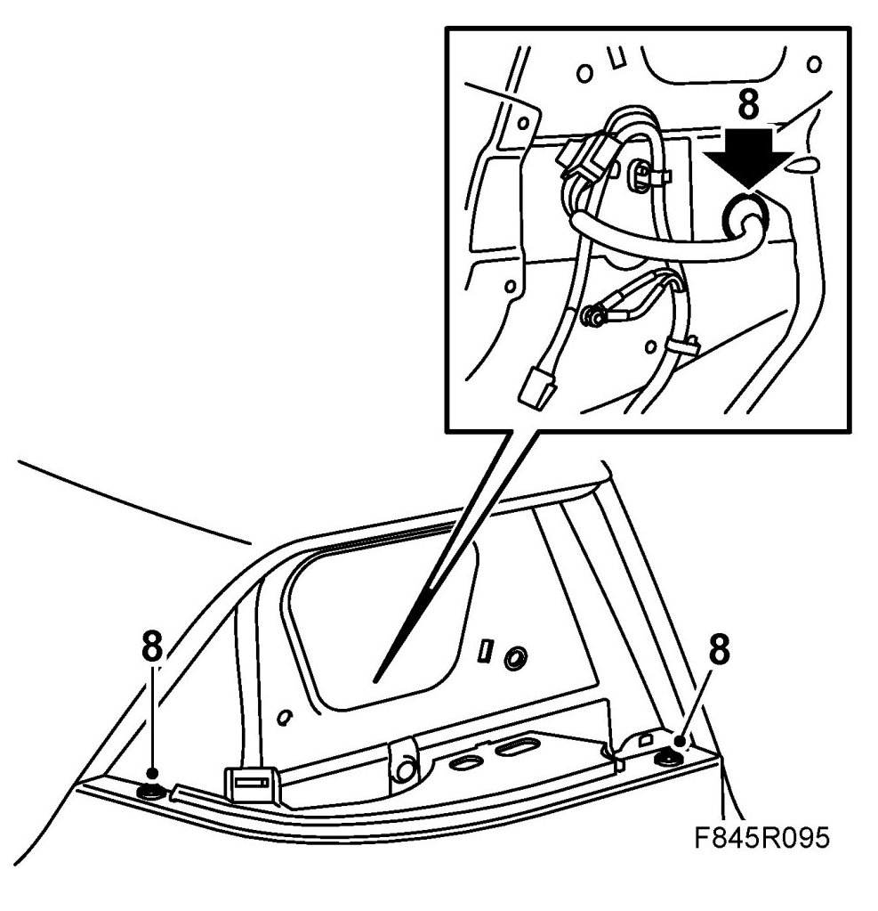
9. Pull off the bumper shell from the holders and lift it off.
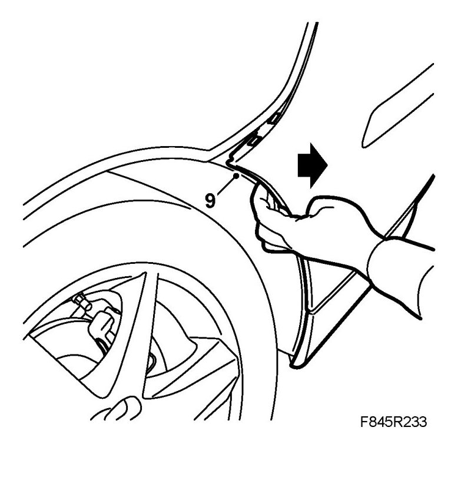
To fit
1. Lift up the bumper shell and guide the tabs under the holders.
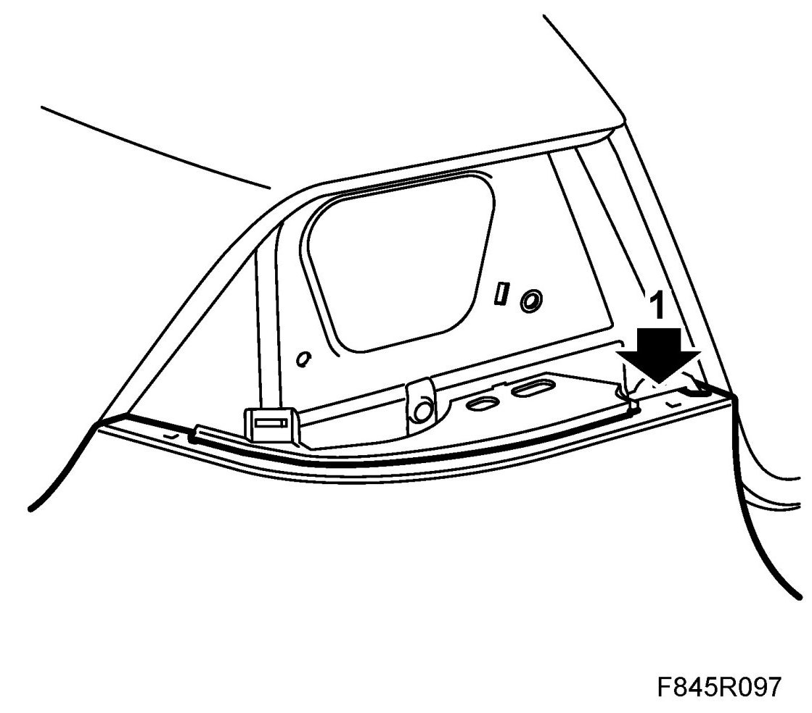
2. Position the front corner of the bumper between the wing liner and the holder. Make sure the shell tongue lies between the wing liner and the bumper shell holder.
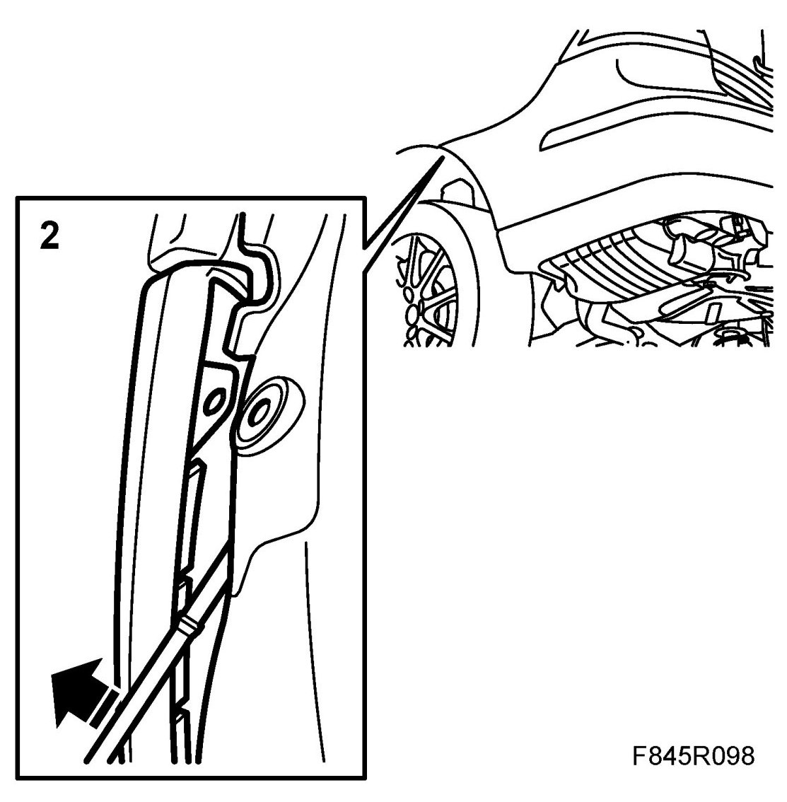
3. Press the bumper shell in place at the retainer strip clips.
Cars with SPA: Run the connector through the rear light cluster recess and press the rubber grommet into place. Plug in the connector.
4. Certain cars: Fit bolts located under the lamp housing.
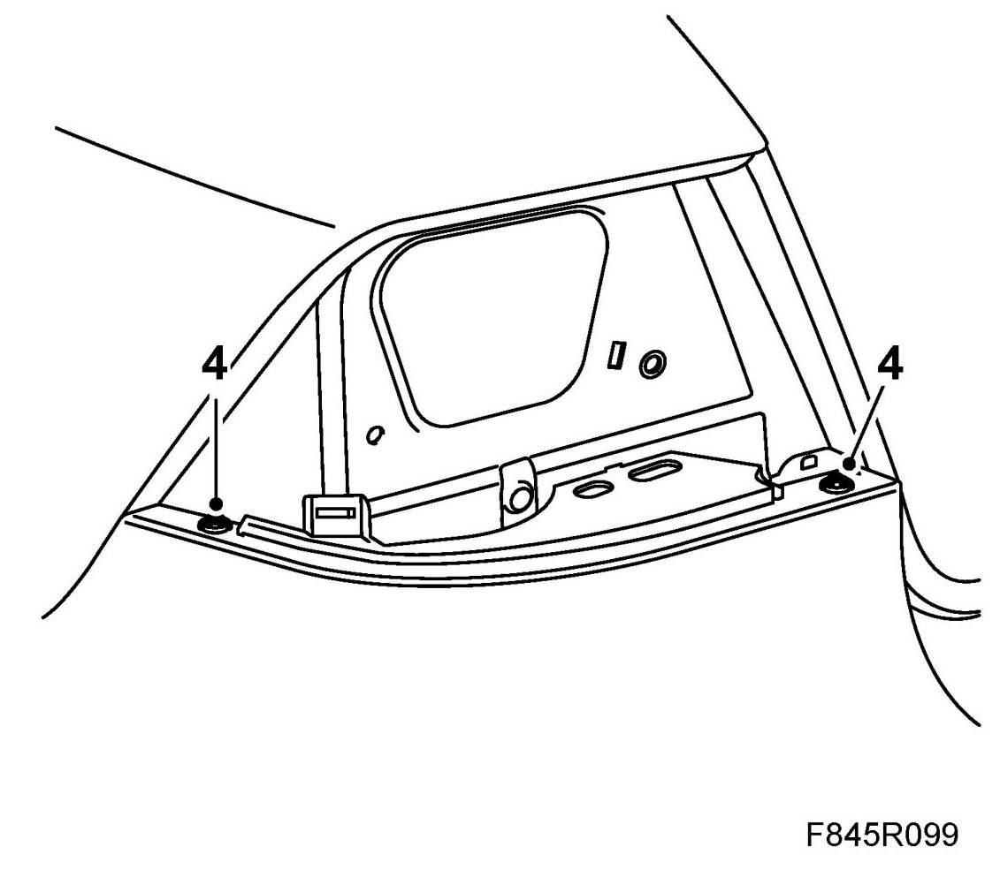
5. Fit the bolts at the wing liner.
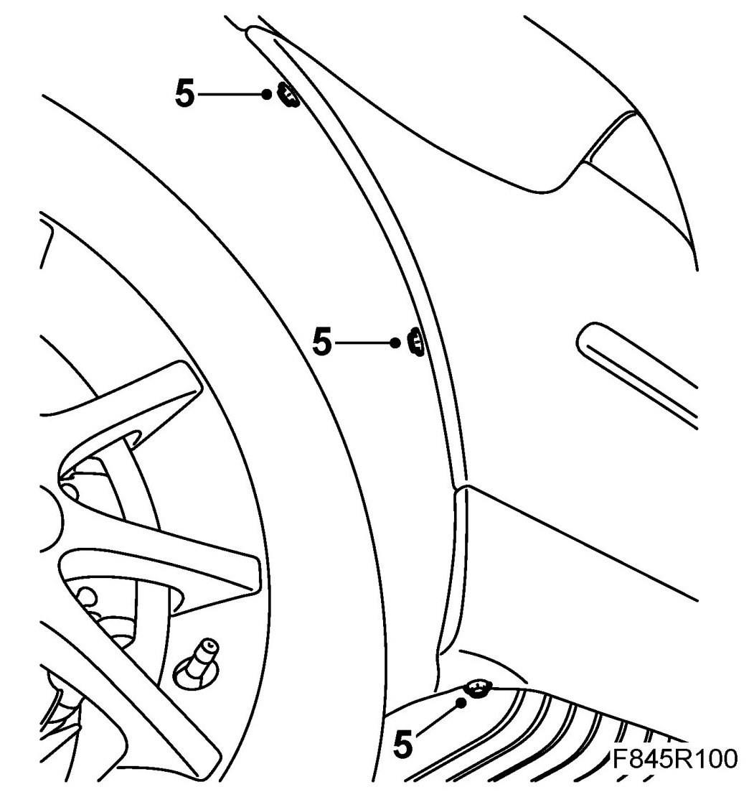
6. Plug in the tail lamp connector.
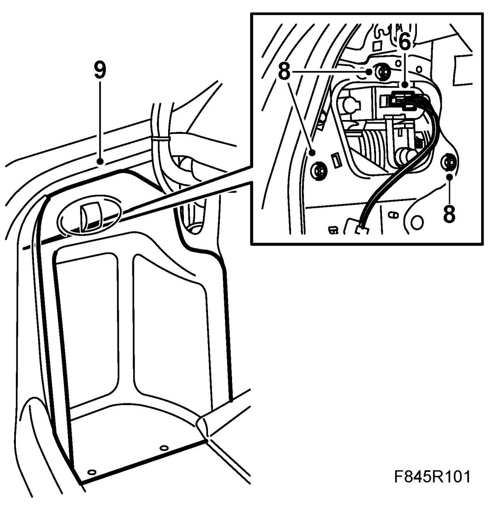
7. Fit the tail lamp using the guide pins. Check the fit of the boot lid moulding at the tail lamp.
8. Fit the tail lamp nuts.
9. Close the side hatches and then the boot lid.
10. Raise the car.
11. Fit the centre nuts of the spoiler.
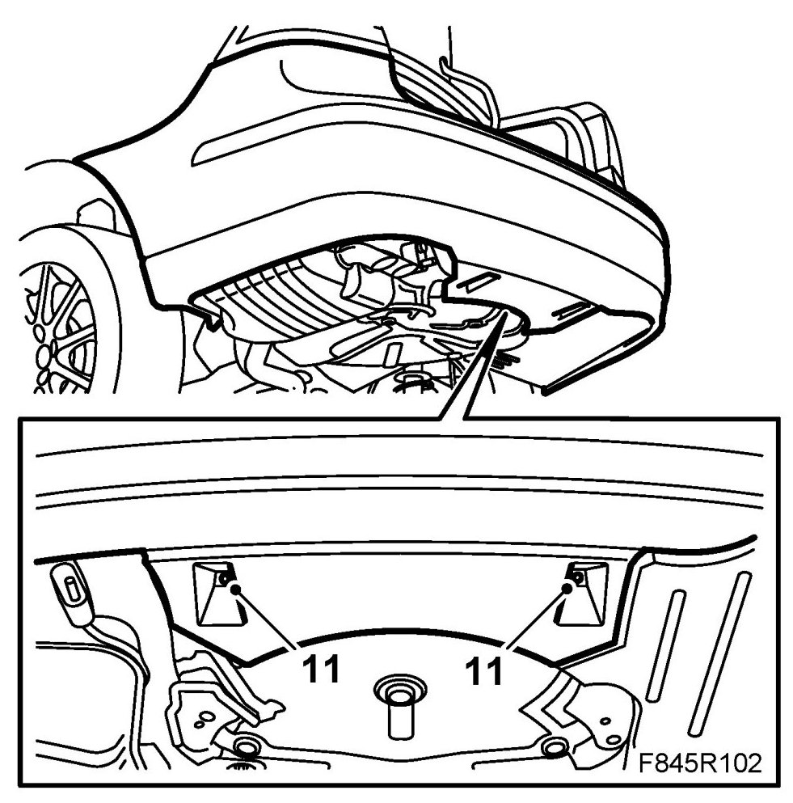
12. Lower the car and check the fit of the bumper shell.